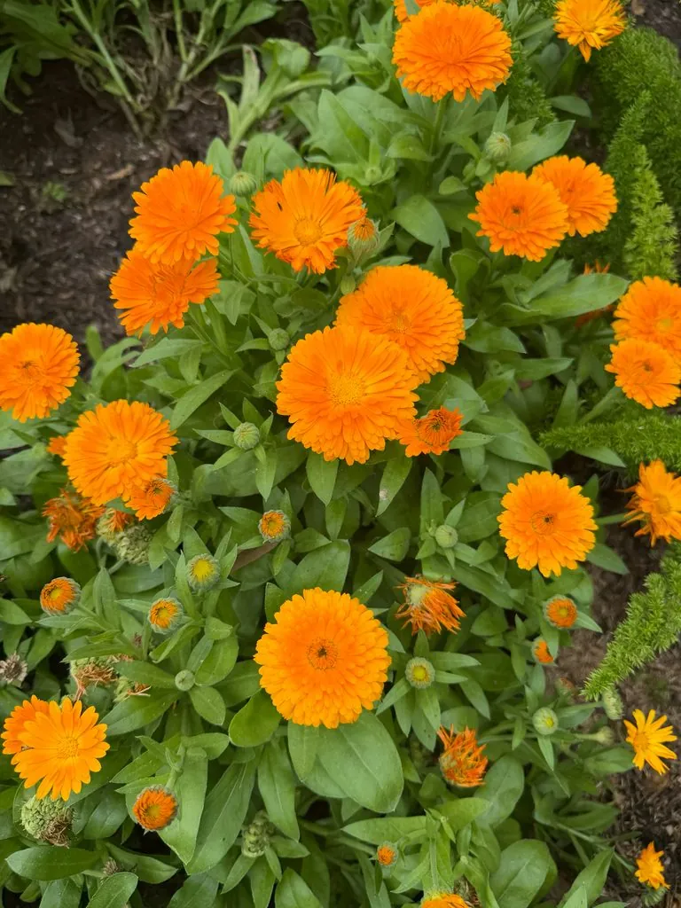

花卉与草本 · 植物界
金盏菊 Calendula officinalis

菊科一年生草本，橙黄色花朵形似金盏，花瓣可食、可入药，是花坛与药草园常见的植物，原产地中海沿岸。
- 分类
- 门被子植物门纲木兰纲目菊目科菊科属金盏花属
- 栖息环境
- 地中海沿岸的向阳坡地与田边，喜凉爽、阳光充足
- 地理分布
- 原产地中海沿岸，现世界各地广泛栽培，中国各地花坛常见
- 保护级别
- 暂无评估
物种志
金盏菊为菊科金盏花属一年生草本，株高 30–60 厘米，茎直立，多分枝，全株被短毛。叶片长椭圆形至倒卵形，互生。头状花序单生茎顶，直径 4–7 厘米，舌状花橙黄或金黄色，多层排列，花期 4–9 月；果实为瘦果，弯曲呈船形。
金盏菊原产地中海沿岸，喜凉爽、阳光充足和排水良好的环境，耐寒不耐酷热，能自播繁衍。它的花瓣富含类胡萝卜素，可提取天然黄色素，也常被用来点缀沙拉、汤和甜点；在欧洲传统医学中，金盏菊的花可入药，制成软膏用于护理皮肤。金盏菊在欧美常被种在蔬菜和药草园中，兼具观赏与实用价值，花期长、管理简单，播种后约 60 天即可开花。
形态与习性
- 株高30–60 厘米，全株被短毛
- 花期4–9 月，晴天开放
- 果期花后结瘦果，弯曲呈船形
- 光照喜充足阳光
- 水分喜湿润，忌积水
- 土壤疏松、排水良好的壤土
- 繁殖以播种为主，能自播
- 主要用途花坛观赏、花瓣食用、提取色素、药用
趣味知识
- 金盏菊的橙黄色花瓣富含类胡萝卜素，可提取天然黄色素。
- 花瓣可点缀沙拉和汤，也常被用于制作护肤品和药膏。
- 金盏菊的花在晴天开放、傍晚闭合，阴雨天也不完全展开。
- 它耐寒不耐酷热，能自播繁衍，是药草园中的常见植物。